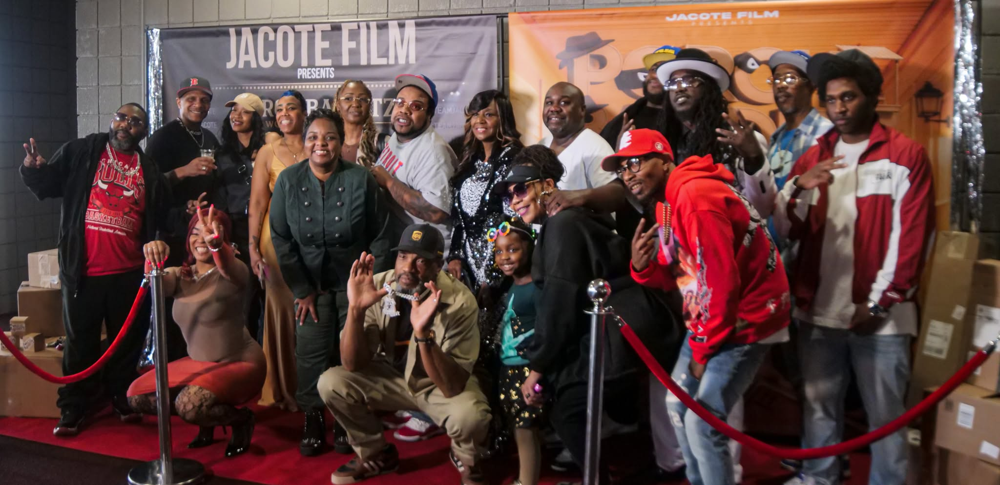
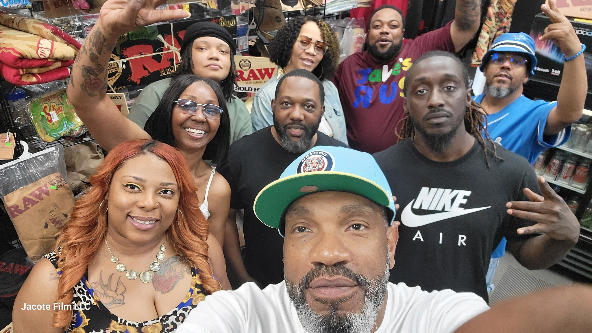
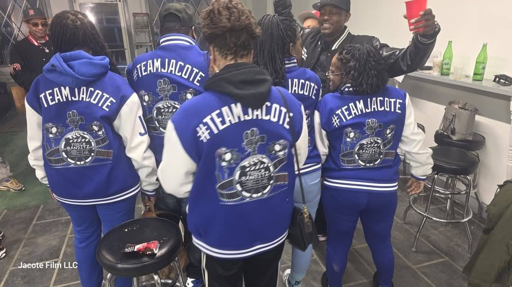
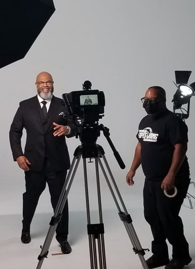
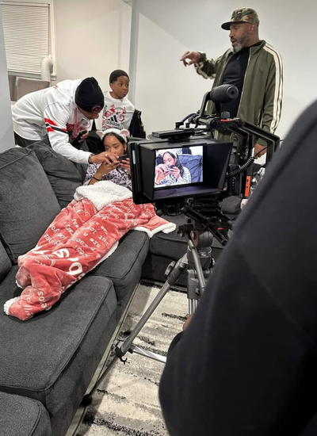
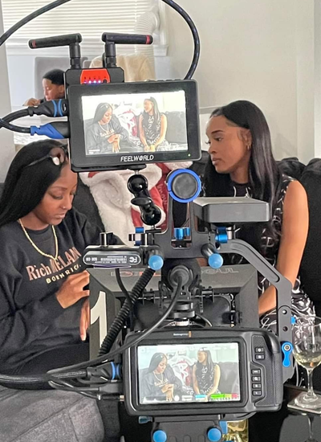
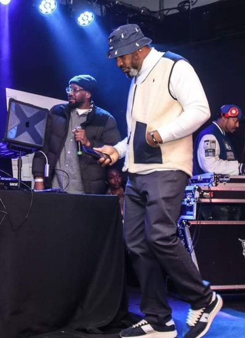

Jacote Film is a black-owned film, television, and commercial production company based in Detroit, Michigan. From feature films to live events to branded content, we are creator-driven, Detroit-proud, and committed to telling stories inspired by the city that made us.
Start A Conversation


Jacote Film is a Detroit-based independent production company founded by Kenyon "Jigsaw" Pruitt: musician, director, producer, actor, and relentless storyteller. Rooted in the rhythms and realities of Detroit, Jacote Film was built on a belief that authentic stories deserve uncompromising craft.
From gritty street narratives to intimate dramas, from police procedurals to romantic shorts, we've been making films that reflect real lives in real places since 1991. We are a collective of creative individuals who's goal is creating interesting stories and bringing them to life visually.
View Our WorkWhether you're a business looking to tell your story, an artist ready to document your craft, or a brand that needs content that actually connects, Jacote Film has the crew, the experience, and the vision to bring it to life.

Every business has a story worth telling. We help you tell yours. From concept to final cut, JacoteFilm creates commercial content that goes beyond selling a product. We build narratives that make your audience feel something and remember your name.

Need a professional crew behind the camera? JacoteFilm provides experienced, Detroit-based production teams for podcasts, corporate videos, commercials, and beyond. We show up fully equipped and ready to make your vision look exactly as good as you imagined it.

In today's landscape, content is currency. We help individuals, brands, and businesses create scroll-stopping social media content that connects with your audience and keeps them coming back! Shot and edited with the same passion and creativity we bring to every project.

Concerts, plays, corporate events like award ceremonies. These live moments only happen once, and we make sure yours lives forever. JacoteFilm's event coverage captures the energy, the emotion, and the details that make your event worth remembering.